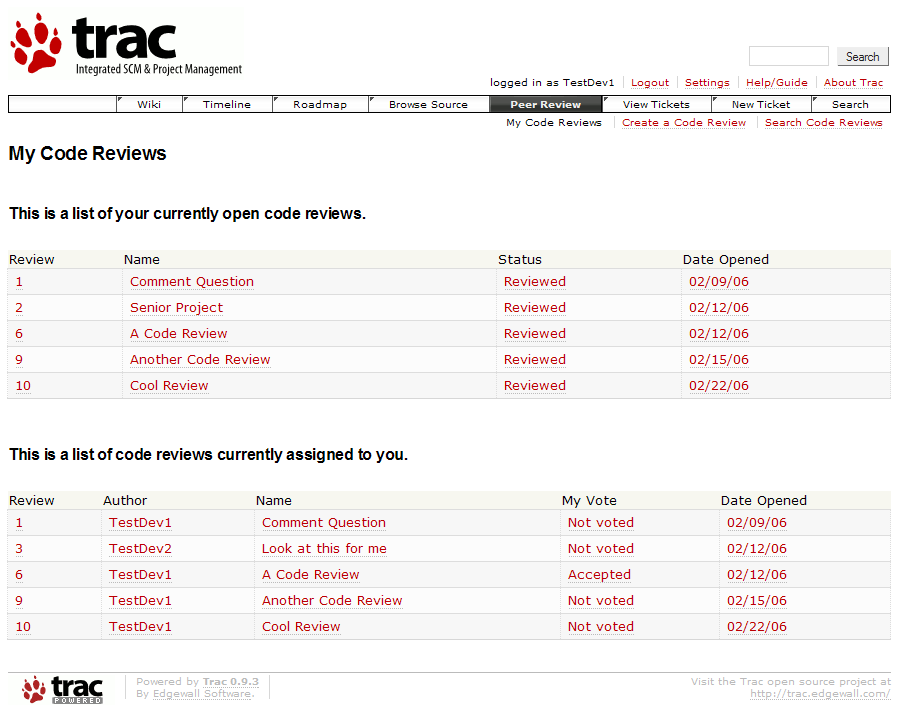
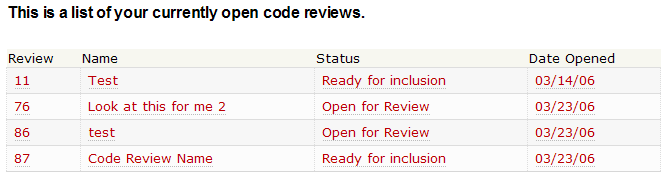
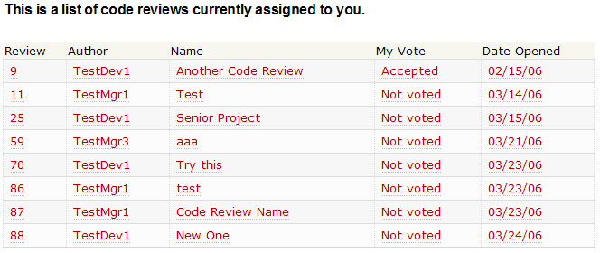
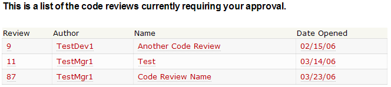

The main page is displayed when the Peer Review button on the navigation bar is clicked.

How to Use: |
| The first table is the list of code reviews where you are the author:

|
| The second table is the list of code reviews where you are the reviewer:

|
| Managers will see an additional table at the top of the page above the two
tables that are typically there for a developer.

|
| Finally, just below the navigation bar in the upper right corner are some navigation links for moving through the plug-in. The links
will take you to the
Main Page,
New Code Review Page, and
Search Code Review Page,
respectively.
Copyright 2005-2006 Team5 |